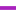

<!doctype html>
<html lang="en">
    <head>
        <meta charset="utf-8">
        <meta http-equiv="X-UA-Compatible" content="IE=edge">
        <meta name="viewport" content="initial-scale=1,user-scalable=no,maximum-scale=1,width=device-width">
        <meta name="mobile-web-app-capable" content="yes">
        <meta name="apple-mobile-web-app-capable" content="yes">
        <link rel="stylesheet" href="css/leaflet.css">
        <link rel="stylesheet" href="css/L.Control.Layers.Tree.css">
        <link rel="stylesheet" href="css/qgis2web.css">
        <link rel="stylesheet" href="css/fontawesome-all.min.css">
        <link rel="stylesheet" href="css/leaflet-control-geocoder.Geocoder.css">
        <link rel="stylesheet" href="css/leaflet-measure.css">
        <style>
        html, body, #map {
            width: 100%;
            height: 100%;
            padding: 0;
            margin: 0;
        }
        </style>
        <title>NWL Waters</title>
    </head>
    <body>
        <div id="map">
        </div>
        <script src="js/qgis2web_expressions.js"></script>
        <script src="js/leaflet.js"></script>
        <script src="js/L.Control.Layers.Tree.min.js"></script>
        <script src="js/leaflet.rotatedMarker.js"></script>
        <script src="js/leaflet.pattern.js"></script>
        <script src="js/leaflet-hash.js"></script>
        <script src="js/Autolinker.min.js"></script>
        <script src="js/rbush.min.js"></script>
        <script src="js/labelgun.min.js"></script>
        <script src="js/labels.js"></script>
        <script src="js/leaflet.wms.js"></script>
        <script src="js/leaflet-control-geocoder.Geocoder.js"></script>
        <script src="js/leaflet-measure.js"></script>
        <script src="data/Pipes_2.js"></script>
        <script src="data/Chambers_3.js"></script>
        <script src="data/Sites_4.js"></script>
        <script>
        var map = L.map('map', {
            zoomControl:false, maxZoom:28, minZoom:1
        })
        var hash = new L.Hash(map);
        map.attributionControl.setPrefix('<a href="https://github.com/tomchadwin/qgis2web" target="_blank">qgis2web</a> &middot; <a href="https://leafletjs.com" title="A JS library for interactive maps">Leaflet</a> &middot; <a href="https://qgis.org">QGIS</a>');
        var autolinker = new Autolinker({truncate: {length: 30, location: 'smart'}});
        // remove popup's row if "visible-with-data"
        function removeEmptyRowsFromPopupContent(content, feature) {
         var tempDiv = document.createElement('div');
         tempDiv.innerHTML = content;
         var rows = tempDiv.querySelectorAll('tr');
         for (var i = 0; i < rows.length; i++) {
             var td = rows[i].querySelector('td.visible-with-data');
             var key = td ? td.id : '';
             if (td && td.classList.contains('visible-with-data') && feature.properties[key] == null) {
                 rows[i].parentNode.removeChild(rows[i]);
             }
         }
         return tempDiv.innerHTML;
        }
        // add class to format popup if it contains media
		function addClassToPopupIfMedia(content, popup) {
			var tempDiv = document.createElement('div');
			tempDiv.innerHTML = content;
			if (tempDiv.querySelector('td img')) {
				popup._contentNode.classList.add('media');
					// Delay to force the redraw
					setTimeout(function() {
						popup.update();
					}, 10);
			} else {
				popup._contentNode.classList.remove('media');
			}
		}
        var title = new L.Control({'position':'topleft'});
        title.onAdd = function (map) {
            this._div = L.DomUtil.create('div', 'info');
            this.update();
            return this._div;
        };
        title.update = function () {
            this._div.innerHTML = '<h2>NWL Waters</h2>';
        };
        title.addTo(map);
        var abstract = new L.Control({'position':'bottomright'});
        abstract.onAdd = function (map) {
            this._div = L.DomUtil.create('div',
            'leaflet-control abstract');
            this._div.id = 'abstract'

                abstract.show();
                return this._div;
            };
            abstract.show = function () {
                this._div.classList.remove("abstract");
                this._div.classList.add("abstractUncollapsed");
                this._div.innerHTML = 'Interactive Map for NWL - Case Study';
        };
        abstract.addTo(map);
        var zoomControl = L.control.zoom({
            position: 'topleft'
        }).addTo(map);
        var measureControl = new L.Control.Measure({
            position: 'topleft',
            primaryLengthUnit: 'meters',
            secondaryLengthUnit: 'kilometers',
            primaryAreaUnit: 'sqmeters',
            secondaryAreaUnit: 'hectares'
        });
        measureControl.addTo(map);
        document.getElementsByClassName('leaflet-control-measure-toggle')[0].innerHTML = '';
        document.getElementsByClassName('leaflet-control-measure-toggle')[0].className += ' fas fa-ruler';
        var bounds_group = new L.featureGroup([]);
        function setBounds() {
            if (bounds_group.getLayers().length) {
                map.fitBounds(bounds_group.getBounds());
            }
        }
        map.createPane('pane_Lidar_Composite_Hillshade_DTM_1m_0');
        map.getPane('pane_Lidar_Composite_Hillshade_DTM_1m_0').style.zIndex = 400;
        var layer_Lidar_Composite_Hillshade_DTM_1m_0 = L.WMS.layer("https://environment.data.gov.uk/spatialdata/lidar-composite-digital-terrain-model-dtm-1m/wms?version=1.3.0", "Lidar_Composite_Hillshade_DTM_1m", {
            pane: 'pane_Lidar_Composite_Hillshade_DTM_1m_0',
            format: 'image/png',
            uppercase: true,
            transparent: true,
            continuousWorld : true,
            tiled: true,
            info_format: 'text/html',
            opacity: 1,
            identify: false,
            attribution: '',
        });
        map.addLayer(layer_Lidar_Composite_Hillshade_DTM_1m_0);
        map.createPane('pane_GoogleSatellite_1');
        map.getPane('pane_GoogleSatellite_1').style.zIndex = 401;
        var layer_GoogleSatellite_1 = L.tileLayer('https://mt1.google.com/vt/lyrs=s&x={x}&y={y}&z={z}', {
            pane: 'pane_GoogleSatellite_1',
            opacity: 0.539,
            attribution: '<a href="https://www.google.at/permissions/geoguidelines/attr-guide.html">Map data ©2015 Google</a>',
            minZoom: 1,
            maxZoom: 28,
            minNativeZoom: 0,
            maxNativeZoom: 20
        });
        layer_GoogleSatellite_1;
        map.addLayer(layer_GoogleSatellite_1);
        function pop_Pipes_2(feature, layer) {
            var popupContent = '<table>\
                    <tr>\
                        <th scope="row">ID</th>\
                        <td class="visible-with-data" id="ID">' + (feature.properties['ID'] !== null ? autolinker.link(feature.properties['ID'].toLocaleString()) : '') + '</td>\
                    </tr>\
                    <tr>\
                        <th scope="row">GIS ID</th>\
                        <td class="visible-with-data" id="GIS ID">' + (feature.properties['GIS ID'] !== null ? autolinker.link(feature.properties['GIS ID'].toLocaleString()) : '') + '</td>\
                    </tr>\
                    <tr>\
                        <th scope="row">Status</th>\
                        <td class="visible-with-data" id="Status">' + (feature.properties['Status'] !== null ? autolinker.link(feature.properties['Status'].toLocaleString()) : '') + '</td>\
                    </tr>\
                    <tr>\
                        <th scope="row">RAG</th>\
                        <td class="visible-with-data" id="RAG">' + (feature.properties['RAG'] !== null ? autolinker.link(feature.properties['RAG'].toLocaleString()) : '') + '</td>\
                    </tr>\
                </table>';
            var content = removeEmptyRowsFromPopupContent(popupContent, feature);
			layer.on('popupopen', function(e) {
				addClassToPopupIfMedia(content, e.popup);
			});
			layer.bindPopup(content, { maxHeight: 400 });
        }

        function style_Pipes_2_0(feature) {
            switch(String(feature.properties['RAG_1'])) {
                case 'Amber':
                    return {
                pane: 'pane_Pipes_2',
                opacity: 1,
                color: 'rgba(255,178,13,1.0)',
                dashArray: '',
                lineCap: 'square',
                lineJoin: 'bevel',
                weight: 4.0,
                fillOpacity: 0,
                interactive: true,
            }
                    break;
                case 'Green':
                    return {
                pane: 'pane_Pipes_2',
                opacity: 1,
                color: 'rgba(51,160,44,1.0)',
                dashArray: '',
                lineCap: 'square',
                lineJoin: 'bevel',
                weight: 4.0,
                fillOpacity: 0,
                interactive: true,
            }
                    break;
                case 'No Info':
                    return {
                pane: 'pane_Pipes_2',
                opacity: 1,
                color: 'rgba(169,34,190,1.0)',
                dashArray: '',
                lineCap: 'square',
                lineJoin: 'bevel',
                weight: 4.0,
                fillOpacity: 0,
                interactive: true,
            }
                    break;
                case 'Others':
                    return {
                pane: 'pane_Pipes_2',
                opacity: 1,
                color: 'rgba(169,34,190,1.0)',
                dashArray: '',
                lineCap: 'square',
                lineJoin: 'bevel',
                weight: 4.0,
                fillOpacity: 0,
                interactive: true,
            }
                    break;
                case 'Red':
                    return {
                pane: 'pane_Pipes_2',
                opacity: 1,
                color: 'rgba(236,35,35,1.0)',
                dashArray: '',
                lineCap: 'square',
                lineJoin: 'bevel',
                weight: 4.0,
                fillOpacity: 0,
                interactive: true,
            }
                    break;
            }
        }
        map.createPane('pane_Pipes_2');
        map.getPane('pane_Pipes_2').style.zIndex = 402;
        map.getPane('pane_Pipes_2').style['mix-blend-mode'] = 'normal';
        var layer_Pipes_2 = new L.geoJson(json_Pipes_2, {
            attribution: '',
            interactive: true,
            dataVar: 'json_Pipes_2',
            layerName: 'layer_Pipes_2',
            pane: 'pane_Pipes_2',
            onEachFeature: pop_Pipes_2,
            style: style_Pipes_2_0,
        });
        bounds_group.addLayer(layer_Pipes_2);
        map.addLayer(layer_Pipes_2);
        function pop_Chambers_3(feature, layer) {
            var popupContent = '<table>\
                    <tr>\
                        <th scope="row">Name</th>\
                        <td class="visible-with-data" id="Name">' + (feature.properties['Name'] !== null ? autolinker.link(feature.properties['Name'].toLocaleString()) : '') + '</td>\
                    </tr>\
                </table>';
            var content = removeEmptyRowsFromPopupContent(popupContent, feature);
			layer.on('popupopen', function(e) {
				addClassToPopupIfMedia(content, e.popup);
			});
			layer.bindPopup(content, { maxHeight: 400 });
        }

        function style_Chambers_3_0() {
            return {
                pane: 'pane_Chambers_3',
                radius: 2.4,
                opacity: 1,
                color: 'rgba(35,35,35,1.0)',
                dashArray: '',
                lineCap: 'butt',
                lineJoin: 'miter',
                weight: 1,
                fill: true,
                fillOpacity: 1,
                fillColor: 'rgba(1,243,239,1.0)',
                interactive: true,
            }
        }
        map.createPane('pane_Chambers_3');
        map.getPane('pane_Chambers_3').style.zIndex = 403;
        map.getPane('pane_Chambers_3').style['mix-blend-mode'] = 'normal';
        var layer_Chambers_3 = new L.geoJson(json_Chambers_3, {
            attribution: '',
            interactive: true,
            dataVar: 'json_Chambers_3',
            layerName: 'layer_Chambers_3',
            pane: 'pane_Chambers_3',
            onEachFeature: pop_Chambers_3,
            pointToLayer: function (feature, latlng) {
                var context = {
                    feature: feature,
                    variables: {}
                };
                return L.circleMarker(latlng, style_Chambers_3_0(feature));
            },
        });
        bounds_group.addLayer(layer_Chambers_3);
        map.addLayer(layer_Chambers_3);
        function pop_Sites_4(feature, layer) {
            var popupContent = '<table>\
                    <tr>\
                        <th scope="row">Area</th>\
                        <td>' + (feature.properties['Area'] !== null ? autolinker.link(feature.properties['Area'].toLocaleString()) : '') + '</td>\
                    </tr>\
                </table>';
            var content = removeEmptyRowsFromPopupContent(popupContent, feature);
			layer.on('popupopen', function(e) {
				addClassToPopupIfMedia(content, e.popup);
			});
			layer.bindPopup(content, { maxHeight: 400 });
        }

        function style_Sites_4_0() {
            return {
                pane: 'pane_Sites_4',
                opacity: 1,
                color: 'rgba(35,35,35,0.23)',
                dashArray: '',
                lineCap: 'butt',
                lineJoin: 'miter',
                weight: 1.0, 
                fill: true,
                fillOpacity: 1,
                fillColor: 'rgba(210,210,210,0.23)',
                interactive: true,
            }
        }
        map.createPane('pane_Sites_4');
        map.getPane('pane_Sites_4').style.zIndex = 404;
        map.getPane('pane_Sites_4').style['mix-blend-mode'] = 'normal';
        var layer_Sites_4 = new L.geoJson(json_Sites_4, {
            attribution: '',
            interactive: true,
            dataVar: 'json_Sites_4',
            layerName: 'layer_Sites_4',
            pane: 'pane_Sites_4',
            onEachFeature: pop_Sites_4,
            style: style_Sites_4_0,
        });
        bounds_group.addLayer(layer_Sites_4);
        map.addLayer(layer_Sites_4);
        var osmGeocoder = new L.Control.Geocoder({
            collapsed: true,
            position: 'topleft',
            text: 'Search',
            title: 'Testing'
        }).addTo(map);
        document.getElementsByClassName('leaflet-control-geocoder-icon')[0]
        .className += ' fa fa-search';
        document.getElementsByClassName('leaflet-control-geocoder-icon')[0]
        .title += 'Search for a place';
        var baseMaps = {};
        var overlaysTree = [
            {label: ' Sites', layer: layer_Sites_4},
            {label: ' Chambers', layer: layer_Chambers_3},
            {label: 'Pipes<br /><table><tr><td style="text-align: center;"></td><td>Amber - May be Blocked</td></tr><tr><td style="text-align: center;"></td><td>Green - Not Blocked</td></tr><tr><td style="text-align: center;"></td><td>No Info</td></tr><tr><td style="text-align: center;"></td><td>Others - </td></tr><tr><td style="text-align: center;"></td><td>Red - Blocked</td></tr></table>', layer: layer_Pipes_2},
            {label: "Google Satellite", layer: layer_GoogleSatellite_1},
            {label: "Lidar_Composite_Hillshade_DTM_1m", layer: layer_Lidar_Composite_Hillshade_DTM_1m_0},]
        var lay = L.control.layers.tree(null, overlaysTree,{
            //namedToggle: true,
            //selectorBack: false,
            //closedSymbol: '&#8862; &#x1f5c0;',
            //openedSymbol: '&#8863; &#x1f5c1;',
            //collapseAll: 'Collapse all',
            //expandAll: 'Expand all',
            collapsed: true,
        });
        lay.addTo(map);
        setBounds();
        var i = 0;
        layer_Chambers_3.eachLayer(function(layer) {
            var context = {
                feature: layer.feature,
                variables: {}
            };
            layer.bindTooltip((layer.feature.properties['Name'] !== null?String('<div style="color: #ffff29; font-size: 6pt; font-weight: bold; font-family: \'Open Sans\', sans-serif;">' + layer.feature.properties['Name']) + '</div>':''), {permanent: true, offset: [-0, -16], className: 'css_Chambers_3'});
            labels.push(layer);
            totalMarkers += 1;
              layer.added = true;
              addLabel(layer, i);
              i++;
        });
        resetLabels([layer_Pipes_2,layer_Chambers_3,layer_Sites_4]);
        map.on("zoomend", function(){
            resetLabels([layer_Pipes_2,layer_Chambers_3,layer_Sites_4]);
        });
        map.on("layeradd", function(){
            resetLabels([layer_Pipes_2,layer_Chambers_3,layer_Sites_4]);
        });
        map.on("layerremove", function(){
            resetLabels([layer_Pipes_2,layer_Chambers_3,layer_Sites_4]);
        });
        </script>
    </body>
</html>
